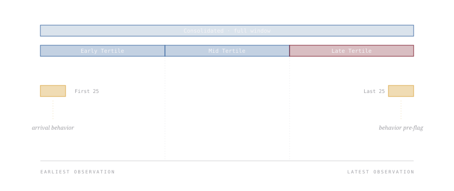

Cohort analytics and per-user investigation are different research problems with different ethical regimes. Cohort work ...
Cohort analytics and per-user investigation are different research problems with different ethical regimes. Cohort work asks how the population behaves; per-user investigation asks what one person did, when, and in what trajectory. The methodology described here sits on top of a Trust & Safety analytics engine and is what you reach for when the unit of analysis is a single account. It takes a user of interest with months or years of platform activity, slices the timeline into six overlapping segments, runs multi-axis analysis on each, and produces a structured forensic report. The commitment is that risk is a trajectory rather than a snapshot, and that the right way to characterize an account is to compare what it was doing on arrival to what it was doing immediately before being flagged.
01 / The Investigation Question
A platform's Trust & Safety analytics organization runs two kinds of work that look superficially similar and are methodologically opposite. Cohort analytics estimates population behavior: what fraction of users encounter a given category of content, how long the average session lasts, where the rate of policy violations is rising. The questions are about distributions; the answers are statistical; the unit of analysis is the population. Per-user investigation does the inverse. It takes one account, often surfaced because automated systems flagged it for human review, and asks what specifically happened on this account, in what order, and what the trajectory implies about risk and intent.
The two kinds of work demand different statistical sensibilities and different ethical guardrails. Cohort analytics is forgiving of missing data and noisy signals because the law of large numbers eventually delivers a reasonable estimate. Forensic per-user analysis is unforgiving on both counts, because there is no averaging across cases when the case is a single individual whose situation may end in account removal, escalation to a child-safety team, or referral to law enforcement. The methodology described below is what handles the second kind of work in a structured, defensible way.
The single hardest move in per-user analysis is rejecting the snapshot. A current risk score is a snapshot. A list of recent policy violations is a snapshot. A topic distribution computed over the entire user history is a snapshot. None of these surface the most important thing about an account, which is whether its trajectory is decelerating, stable, or accelerating. The methodology below is built around the trajectory.
02 / Six Slices, One Trajectory
For each user of interest, the engine slices the timeline six ways and runs the full analytical suite on each slice independently. The slices overlap deliberately, and that overlap is the source of the methodology's diagnostic power.

FIG. 01 The six temporal slices applied to each user of interest. The three tertiles partition the full window for trajectory inference; the First 25 and Last 25 insets anchor the boundaries so arrival behavior is directly comparable to pre-flag behavior.
The Consolidated slice gives the baseline distribution: the user's overall content profile across the full observation window. The three tertile slices partition that window into thirds, which is the minimum granularity at which trajectory direction (decelerating, stable, accelerating) becomes statistically legible. The First 25 and Last 25 insets anchor the boundaries: the first twenty-five observations capture how the user behaved on arrival, and the last twenty-five capture how the account was behaving immediately before the flagging event that triggered the investigation. Comparing those two boundary samples directly is often the single most diagnostic move in the entire analysis. A user whose arrival behavior and pre-flag behavior look the same is a different finding than a user whose pre-flag behavior is qualitatively divergent from how they began.
The slices are deliberately overlapping. The Early Tertile contains the First 25 by construction, and the Late Tertile contains the Last 25 by construction. Overlapping slices let an analyst confirm that a signal observed in a small inset is also visible in its containing tertile, which is a basic form of robustness check. A finding that appears only in the First 25 but not in the Early Tertile is more likely to be a small-sample artifact than a real signal.
03 / Multi-Axis Triangulation
Each slice receives the full analytical suite from the upstream engine: time series of policy events, view source distribution, sentiment polarity, n-gram frequency, topic clusters, collocation graphs, NLTK-derived language features, and word clouds. The reason the engine emits all of these for every slice rather than picking one or two is that each axis has known failure modes, and those failure modes are mostly orthogonal. Two signals from different axes pointing in the same direction is a much stronger inference than either signal alone.
A topic-cluster shift between Early and Late Tertiles, for example, is a candidate signal but not a finding on its own. Topic models are stochastic, the topic indices reshuffle from run to run, and apparent drift can be an artifact of corpus size differences between the slices. The same shift becomes a finding when it co-occurs with a sentiment polarity shift in the same direction and a change in the dominant view sources driving that user's content delivery. Three independent axes converging on the same temporal boundary is hard to explain as artifact.
The view source axis is particularly important and easy to overlook. Two users with identical topical and sentiment profiles can be in radically different risk situations depending on whether their content reaches them through search, recommendation, or direct following. A topical shift driven by deliberate search is a different finding than one driven by recommendation drift. The first implies user agency; the second implies system-level steering. The methodology insists on surfacing that distinction in every investigation.
The co-occurrence layer catches what frequency and topic analysis smooth over. New word-pairings appearing at high frequency in a user's consumption window often precede new topical territory by days or weeks. The pairing is the leading indicator; the topic shift is the lagging confirmation. The methodology weights the co-occurrence layer heavily for that reason, especially in the Late Tertile slice where leading indicators are most actionable.
04 / The Ethical Boundary
A methodology that produces forensic-grade trajectory reports on individual users is a methodology that can be misused. The questions worth being explicit about are not whether the analysis can be done (it can) or whether it should ever be done (sometimes it must), but under what specific conditions the work is justified and what guardrails govern it. Four principles shape the methodology.
Necessity. The investigation runs only on accounts that have already been flagged by an upstream system, with documented justification for the flag. The methodology is not a discovery tool; it is an interpretation tool for cases that have already cleared a threshold of automated suspicion. Fishing expeditions are rejected on principle, because the methodology's strength on individual cases is precisely what makes it dangerous if pointed at uninvestigated populations.
Proportionality. The depth of analysis applied to a flagged account scales with the severity of the suspected violation and the harm it implicates. A spam-policy flag does not warrant the six-slice trajectory analysis; it warrants a much lighter cohort-level look. The deep methodology is reserved for high-severity categories, which in practice means child safety, credible threat indicators, and coordinated inauthentic behavior. Reaching for the deep methodology on lower-severity cases is a category error that wastes investigator time and creates unnecessary surveillance pressure on accounts that did not earn it.
Accountability. Every investigation produces a structured artifact that is logged, attributable to the analyst, reviewable by audit, and subject to retention policy. The Jinja-templated report format from the upstream engine is what makes this enforceable: every section is the same in every report, so reviewers can read across investigations consistently and audit teams can verify that conclusions are supported by the documented analysis. Ad-hoc analysis is harder to audit by construction; structured output is the accountability mechanism.
Redaction discipline. Reports leaving the analytics environment for legal review, policy review, or external regulator inspection are redacted by default. User identifiers, granular timestamps, and content excerpts that could re-identify an account or a vulnerable population are removed before any external transmission. The redaction is not a final-step add-on but a property of the report templates themselves, which generate redacted and unredacted variants from the same underlying analysis.
These principles are not aspirational. They are the conditions under which the methodology is appropriate to use at all. A team using these tools without these guardrails is doing surveillance with a research label.
05 / What Gets Built On Top
The methodology produces structured reports, not enforcement decisions. The reports feed downstream review processes that combine the analytical output with judgments about context, intent, vulnerability, and proportionate response. An investigation report can support an account-removal decision, an escalation to a child-safety team, a referral to law enforcement, a moderator briefing for a category-level policy adjustment, or a conclusion that the flagged behavior was a false positive that the investigation has now disconfirmed. The methodology is designed to support all five outcomes equally.
The most important downstream use is the false positive disconfirmation. Automated flagging systems have non-trivial false positive rates, and the cost of acting on a false positive at the account level is high. A trajectory analysis that finds no evidence of acceleration, no topic drift toward higher-risk territory, and no co-occurrence shifts that would support the original flag is a finding worth recording explicitly. The methodology produces those findings on the same template as the confirmatory ones, so the disconfirmation has the same evidentiary weight as a confirmation would.
Pairing notes: the analytical engine that drives the per-user investigation is described separately. This piece covers the methodology layer; the companion piece covers the engine that makes it tractable. Either can be discussed independently, but in practice the methodological choices about temporal segmentation and multi-axis triangulation shaped the engine's output structure, and the engine's standardized output structure is what makes the methodology auditable. The two artifacts co-evolved.
The methodology is built for retrospective investigation of already-flagged accounts and does not generalize to real-time decision systems. The temporal segmentation requires sufficient observation history to make tertile partitioning meaningful, which excludes new accounts. Findings remain probabilistic interpretations of behavioral signals, not direct evidence of intent or conduct, and the language of investigation reports is calibrated to that limitation. Topic and co-occurrence inferences are stochastic and the methodology relies on inter-axis convergence rather than any single axis's verdict, which protects against single-method failure modes but does not eliminate them. The redaction discipline reduces but does not eliminate re-identification risk for users in narrow demographic intersections.